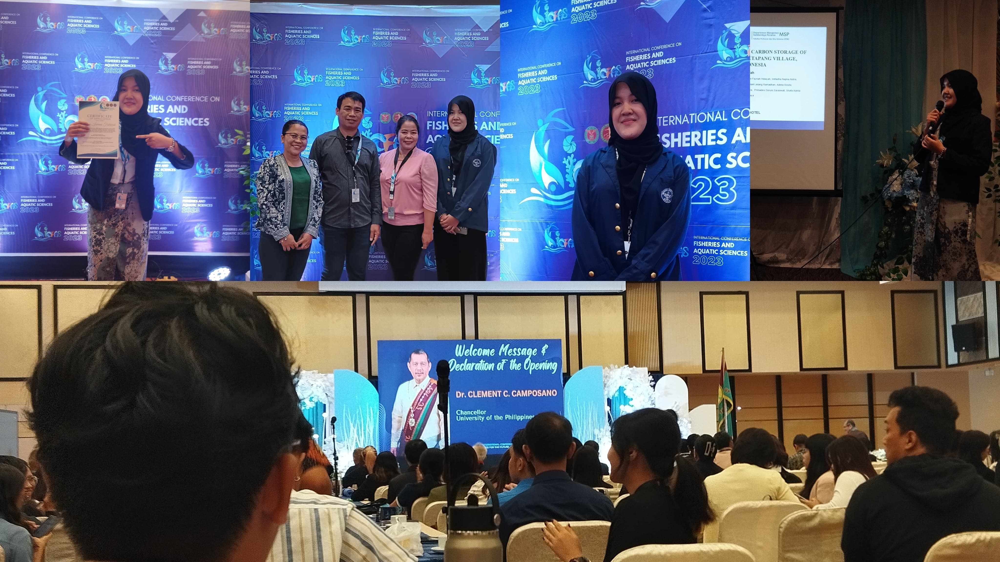

Presenting Research Internationally: 7th ICFAS Oral Presentation Experience
7th International Conference for Fisheries and Aquatic Sciences, Philippines

Conference Presentation
7th International Conference for Fisheries and Aquatic Sciences, Philippines – Ilo Ilo, Philippines
I had the honor of being an oral presenter at the International Conference for Fisheries and Aquatic Sciences (ICFAS) , held in the Philippines. I presented my research titled "Biodiversity and Organic Carbon Storage in Mangrove Ecosystem of Ketapang Village, Tangerang, Indonesia," which explored the ecological importance of mangroves in supporting species diversity and carbon sequestration. This experience allowed me to share my findings with an international academic audience, engage in meaningful scientific discussions, and strengthen my communication and public speaking skills in a professional environment.
- Received a Certificate of Appreciation as a scientific session presenter (oral category).
- Delivered a 15-minute oral presentation in English, followed by a Q&A session, to an international academic audience.
- Successfully presented original research on mangrove biodiversity and carbon storage, demonstrating both scientific knowledge and communication skills.